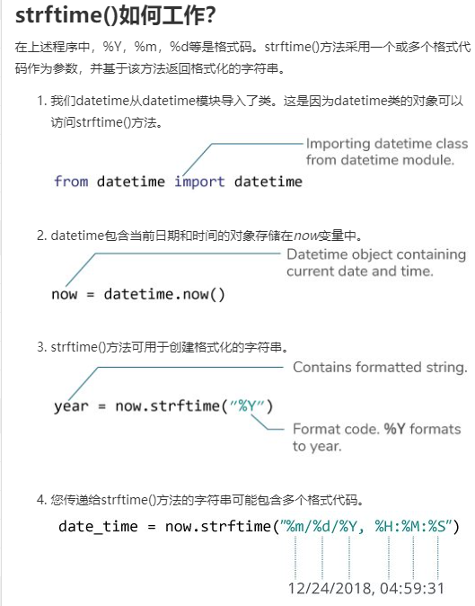
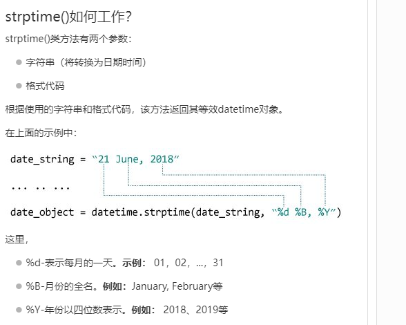

Python 日期时间(datetime)
在本文中，您将通过示例学习如何在Python中操作日期和时间。
Python有一个名为datetime的模块，用于处理日期和时间。在深入学习之前，让我们创建一些与日期和时间相关的简单程序。
示例1：获取当前日期和时间
| Python |
|---|
| import datetime
datetime_object = datetime.datetime.now()
print(datetime_object)
|
当您运行程序时，输出将类似于：
2020-04-13 17:09:49.015911
这里，我们使用import datetime语句导入了datetime模块。
datetime模块中定义的一个类是datetime类。然后，我们使用now()方法创建一个包含当前本地日期和时间的datetime对象。
示例2：获取当前日期
| Python |
|---|
| import datetime
date_object = datetime.date.today()
print(date_object)
|
当您运行程序时，输出将类似于：
2020-04-13
在这个程序中，我们使用了date类中定义的today()方法来获取一个包含当前本地日期的date对象。
datetime里面有什么？
我们可以使用dir()函数来获取包含模块所有属性的列表。
| Python |
|---|
| import datetime
print(dir(datetime))
|
运行该程序时，输出为：
['MAXYEAR', 'MINYEAR', 'builtins', 'cached', 'doc', 'file', 'loader', 'name', 'package', 'spec', '_divide_and_round', 'date', 'datetime', 'datetime_CAPI', 'time', 'timedelta', 'timezone', 'tzinfo']
datetime模块中常用的类是：
- date类
- time类
- datetime类
- timedelta类
datetime.date类
您可以从date类示例化date对象。date对象表示日期(年、月和日)。
示例3：表示日期的Date对象
| Python |
|---|
| import datetime
d = datetime.date(2019, 4, 13)
print(d)
|
运行该程序时，输出为：
2019-04-13
如果您想知道，上面示例中的date()是date类的构造函数。构造函数有三个参数:年、月和日。
变量a是一个date对象。
我们只能从datetime模块中导入date类。就是这样：
| Python |
|---|
| from datetime import date
a = date(2019, 4, 13)
print(a)
|
示例4：获取当前日期
您可以使用一个名为today()的类方法来创建一个包含当前日期的date对象。方法如下:
| Python |
|---|
| from datetime import date
today = date.today()
print("当前日期 =", today)
|
示例5：从时间戳获取日期
我们还可以从时间戳创建日期对象。Unix时间戳是特定日期到UTC的1970年1月1日之间的秒数。可以使用fromtimestamp()方法将时间戳转换为日期。
| Python |
|---|
| from datetime import date
timestamp = date.fromtimestamp(1576244364)
print("日期 =", timestamp)
|
运行该程序时，输出为：
日期 = 2019-12-13
示例6：打印今天的年，月和日
我们可以轻松地从日期对象获取年，月，日，星期几等。就是这样：
| Python |
|---|
| from datetime import date
# 今天的日期对象
today = date.today()
print("当前年:", today.year)
print("当前月:", today.month)
print("当前日:", today.day)
|
datetime.time
从time类示例化的时间对象表示本地时间。
示例7：表示时间的时间对象
| Python |
|---|
| from datetime import time
# time(hour = 0, minute = 0, second = 0)
a = time()
print("a =", a)
# time(hour, minute and second)
b = time(11, 34, 56)
print("b =", b)
# time(hour, minute and second)
c = time(hour = 11, minute = 34, second = 56)
print("c =", c)
# time(hour, minute, second, microsecond)
d = time(11, 34, 56, 234566)
print("d =", d)
|
运行该程序时，输出为：
| Python |
|---|
| a = 00:00:00
b = 11:34:56
c = 11:34:56
d = 11:34:56.234566
|
示例8：打印时，分，秒和微秒
创建time对象后，您可以轻松打印其属性，例如小时，分钟等。
| Python |
|---|
| from datetime import time
a = time(11, 34, 56)
print("小时=", a.hour)
print("分钟=", a.minute)
print("秒=", a.second)
print("微秒=", a.microsecond)
|
运行示例时，输出将是：
| Python |
|---|
| 小时= 11
分钟= 34
秒= 56
微秒= 0
|
注意，我们还没有传递微秒参数。因此，将打印其默认值0。
datetime.datetime
datetime模块有一个名为的dateclass类，可以包含来自date和time对象的信息。
示例9：Python datetime对象
| Python |
|---|
| from datetime import datetime
#datetime(year, month, day)
a = datetime(2019, 11, 28)
print(a)
# datetime(year, month, day, hour, minute, second, microsecond)
b = datetime(2019, 11, 28, 23, 55, 59, 342380)
print(b)
|
运行该程序时，输出为：
| Python |
|---|
| 2019-11-28 00:00:00
2019-11-28 23:55:59.342380
|
datetime()构造函数中的前三个参数year、month和day是必需的。
示例10：打印年，月，时，分和时间戳
| Python |
|---|
| from datetime import datetime
a = datetime(2019, 12, 28, 23, 55, 59, 342380)
print("年 =", a.year)
print("月 =", a.month)
print("日 =", a.day)
print("时 =", a.hour)
print("份 =", a.minute)
print("时间戳 =", a.timestamp())
|
运行该程序时，输出为：
| Python |
|---|
| 年 = 2019
月 = 12
日 = 28
时 = 23
份 = 55
时间戳 = 1577548559.34238
|
datetime.timedelta
timedelta对象表示两个日期或时间之间的时差。
示例11：两个日期和时间之间的时差
| Python |
|---|
| from datetime import datetime, date
t1 = date(year = 2018, month = 7, day = 12)
t2 = date(year = 2017, month = 12, day = 23)
t3 = t1 - t2
print("t3 =", t3)
t4 = datetime(year = 2018, month = 7, day = 12, hour = 7, minute = 9, second = 33)
t5 = datetime(year = 2019, month = 6, day = 10, hour = 5, minute = 55, second = 13)
t6 = t4 - t5
print("t6 =", t6)
print("type of t3 =", type(t3))
print("type of t6 =", type(t6))
|
运行该程序时，输出为：
| Python |
|---|
| t3 = 201 days, 0:00:00
t6 = -333 days, 1:14:20
type of t3 = <class 'datetime.timedelta'>
type of t6 = <class 'datetime.timedelta'>
|
注意，t3和t6都是类型。
示例12：两个timedelta对象之间的时间差
| Python |
|---|
| from datetime import timedelta
t1 = timedelta(weeks = 2, days = 5, hours = 1, seconds = 33)
t2 = timedelta(days = 4, hours = 11, minutes = 4, seconds = 54)
t3 = t1 - t2
print("t3 =", t3)
|
运行该程序时，输出为：
t3 = 14 days, 13:55:39
在这里，我们创建了两个timedelta对象t1和t2，它们直接相差的天数被打印在屏幕上。
示例13：打印负timedelta对象
| Python |
|---|
| from datetime import timedelta
t1 = timedelta(seconds = 33)
t2 = timedelta(seconds = 54)
t3 = t1 - t2
print("t3 =", t3)
print("t3 =", abs(t3))
|
运行该程序时，输出为：
| Python |
|---|
| t3 = -1 day, 23:59:39
t3 = 0:00:21
|
示例14：持续时间（以秒为单位）
您可以使用total_seconds()方法获得timedelta对象中的总秒数。
| Python |
|---|
| from datetime import timedelta
t = timedelta(days = 5, hours = 1, seconds = 33, microseconds = 233423)
print("total seconds =", t.total_seconds())
|
运行该程序时，输出为：
total seconds = 435633.233423
您还可以使用+运算符找到两个日期和时间的总和。同样，您可以将timedelta对象乘以整数和浮点数。
Python格式日期时间
日期和时间的表示方式在不同的地方，组织等中可能有所不同。在美国，使用mm / dd / yyyy更为常见，而在英国使用dd / mm / yyyy更为常见。
Python有strftime()和strptime()方法来处理这个问题。
Python strftime()-字符串的日期时间对象
strftime()方法是在date、datetime和time类下面定义的。该方法根据给定的日期、日期时间或时间对象创建格式化的字符串。
示例15：使用strftime()格式化日期
| Python |
|---|
| from datetime import datetime
# current date and time
now = datetime.now()
t = now.strftime("%H:%M:%S")
print("time:", t)
s1 = now.strftime("%m/%d/%Y, %H:%M:%S")
# mm/dd/YY H:M:S format
print("s1:", s1)
s2 = now.strftime("%d/%m/%Y, %H:%M:%S")
# dd/mm/YY H:M:S format
print("s2:", s2)
|
当您运行程序时，输出将类似于：
| Python |
|---|
| time: 04:34:52
s1: 12/26/2018, 04:34:52
s2: 26/12/2018, 04:34:52
|
这里%Y，%m，%d，%H等都是格式代码。strftime()方法采用一个或多个格式代码，并根据该代码返回格式化的字符串。
在上面的程序中，t，s1和s2是字符串。
- %Y -年[0001，...，2018，2019，...，9999]
- %m -月[01，02，...，11，12]
- %d -天[01，02，...，30，31]
- %H -小时[00，01，...，22，23
- %M -分钟[00，01，...，58，59]
- %S -秒[00，01，...，58，59]
要了解有关strftime()代码并设置其格式的更多信息，请访问：Python strftime()。
Python strptime()-日期时间的字符串
strptime()方法从一个给定的字符串(表示日期和时间)创建一个datetime对象。
示例16：strptime()
| Python |
|---|
| from datetime import datetime
date_string = "21 June, 2018"
print("date_string =", date_string)
date_object = datetime.strptime(date_string, "%d %B, %Y")
print("date_object =", date_object)
|
运行该程序时，输出为：
| Python |
|---|
| date_string = 21 June, 2018
date_object = 2018-06-21 00:00:00
|
strptime()方法有两个参数：
- 表示日期和时间的字符串
- 等同于第一个参数的格式代码
顺便说一下，%d、%B和%Y格式代码分别用于日、月(全称)和年。
访问Python strptime()了解更多信息。
在Python中处理时区
假设您正在处理一个项目，需要根据其时区显示日期和时间。我们建议您使用第三方的pytZ模块，而不是自己处理时区。
| Python |
|---|
| from datetime import datetime
import pytz
local = datetime.now()
print("Local:", local.strftime("%m/%d/%Y, %H:%M:%S"))
tz_NY = pytz.timezone('America/New_York')
datetime_NY = datetime.now(tz_NY)
print("NY:", datetime_NY.strftime("%m/%d/%Y, %H:%M:%S"))
tz_London = pytz.timezone('Europe/London')
datetime_London = datetime.now(tz_London)
print("London:", datetime_London.strftime("%m/%d/%Y, %H:%M:%S"))
|
当您运行程序时，输出将类似于：
| Python |
|---|
| Local time: 2018-12-20 13:10:44.260462
America/New_York time: 2018-12-20 13:10:44.260462
Europe/London time: 2018-12-20 13:10:44.260462
|
在这里，datetime_NY和datetime_London是包含各自时区的当前日期和时间的datetime对象。
Python strftime()
在本文中，您将学习如何将date、time和datetime对象转换为它的等效字符串(通过示例)
strftime()方法使用date，time或datetime对象返回表示日期和时间的字符串。
示例1：使用strftime()将日期时间转换为字符串
下面的程序将datetime包含当前日期和时间的对象转换 为不同格式的字符串。
| Python |
|---|
| from datetime import datetime
now = datetime.now() # 当前的日期和时间
year = now.strftime("%Y")
print("年:", year)
month = now.strftime("%m")
print("月:", month)
day = now.strftime("%d")
print("日:", day)
time = now.strftime("%H:%M:%S")
print("时间:", time)
date_time = now.strftime("%m/%d/%Y, %H:%M:%S")
print("日期和时间:",date_time)
|
当您运行程序时，输出将如下所示：
| Python |
|---|
| 年: 2020
月: 04
日: 13
时间: 17:35:22
日期和时间: 04/13/2020, 17:35:22
|
在这里，year，day，time和date_time是字符串，而now是一个datetime对象。

示例2：根据时间戳创建字符串
| Python |
|---|
| from datetime import datetime
timestamp = 1578797322
date_time = datetime.fromtimestamp(timestamp)
print("日期时间对象:", date_time)
d = date_time.strftime("%m/%d/%Y, %H:%M:%S")
print("输出 2:", d)
d = date_time.strftime("%d %b, %Y")
print("输出 3:", d)
d = date_time.strftime("%d %B, %Y")
print("输出 4:", d)
d = date_time.strftime("%I%p")
print("输出 5:", d)
|
运行该程序时，输出为：
| Python |
|---|
| 日期时间对象: 2020-01-12 10:48:42
输出 2: 01/12/2020, 10:48:42
输出 3: 12 Jan, 2020
输出 4: 12 January, 2020
输出 5: 10AM
|
格式代码清单
下表显示了您可以传递给该strftime()方法的所有代码。
| 指令 |
含义 |
例如 |
| %a |
工作日名称的缩写。 |
Sun, Mon, ... |
| %A |
工作日全名。 |
Sunday, Monday, .. |
| %w |
工作日为十进制数字。 |
0，1，...，6 |
| %d |
月份中的一天，以零填充的十进制数表示。 |
01，02，...，31 |
| %-d |
以十进制数表示的月份中的一天。 |
1，2，...，30 |
| %b |
月份的缩写。 |
Jan, Feb, ..., Dec |
| %B |
完整的月份名称。 |
January, February, ... |
| %m |
月份为零填充的十进制数字。 |
01、02，...，12 |
| %-m |
以十进制数表示的月份。 |
1，2，...，12 |
| %y |
无世纪的年份，为零填充的十进制数字。 |
00、01，...，99 |
| %-y |
没有世纪的年份作为十进制数字。 |
0，1，...，99 |
| %Y |
以世纪作为十进制数字的年份。 |
2013、2019等 |
| %H |
小时（24小时制），为补零的十进制数字。 |
00、01，...，23 |
| %-H |
小时（24小时制）为十进制数字。 |
0，1，...，23 |
| %I |
小时（12小时制），为零填充的十进制数字。 |
01、02，...，12 |
| %-I |
小时（12小时制）为十进制数字。 |
1 2 2 |
| %p |
语言环境的上午或下午。 |
AM,PM |
| %M |
分钟，为零填充的十进制数字。 |
00、01，...，59 |
| %-M |
以十进制数字表示。 |
0，1，...，59 |
| %S |
第二个为零填充的十进制数。 |
00、01，...，59 |
| %-S |
第二个十进制数字。 |
0，1，...，59 |
| %f |
微秒，十进制数，在左侧补零。 |
000000-999999 |
| %z |
UTC偏移量，格式为+ HHMM或-HHMM。 |
|
| %Z |
时区名称。 |
|
| %j |
一年中的一天，以零填充的十进制数字表示。 |
001，002，...，366 |
| %-j |
一年中的天，以十进制数字表示。 |
1，2，...，366 |
| %U |
一年中的第几周（星期日为一周的第一天）。在第一个星期日之前的新的一年中的所有天都被视为在第0周。 |
00、01，...，53 |
| %W |
一年中的第几周（星期一为一周中的第一天）。第一个星期一之前的新的一年中的所有天均视为在第0周。 |
00、01，...，53 |
| %c |
语言环境的适当日期和时间表示。 |
Mon Sep 30 07:06:05 2019 |
| %x |
语言环境的适当日期表示形式。 |
13/9/30 |
| %X |
语言环境的适当时间表示形式。 |
07:06:05 |
| %% |
文字“％”字符。 |
％ |
示例3：语言环境的适当日期和时间
| Python |
|---|
| from datetime import datetime
timestamp = 1578797322
date_time = datetime.fromtimestamp(timestamp)
d = date_time.strftime("%c")
print("输出 1:", d)
d = date_time.strftime("%x")
print("输出 2:", d)
d = date_time.strftime("%X")
print("输出 3:", d)
|
运行该程序时，输出为：
| Python |
|---|
| 输出 1: Sun Jan 12 10:48:42 2020
输出 2: 01/12/20
输出 3: 10:48:42
|
格式代码%c，%x以及%X用于语言环境的适当的日期和时间表示。
我们还建议您检查Python strptime()。strptime()方法从字符串创建datetime对象。
Python strptime()
在本文中，您将学习如何从字符串创建datetime对象(在示例的帮助下)。
strptime()方法从给定的字符串创建datetime对象。
注意：您不能从每个字符串创建datetime对象。该字符串必须采用某种格式。
示例1：日期时间对象的字符串
| Python |
|---|
| from datetime import datetime
date_string = "21 June, 2018"
print("date_string =", date_string)
print("date_string数据类型 =", type(date_string))
date_object = datetime.strptime(date_string, "%d %B, %Y")
print("date_object =", date_object)
print("date_object数据类型 =", type(date_object))
|
运行该程序时，输出为：
| Python |
|---|
| date_string = 21 June, 2018
date_string 数据类型 = <class 'str'>
date_object = 2018-06-21 00:00:00
date_object 数据类型 = <class 'datetime.datetime'>
|

示例2：日期时间对象的字符串
| Python |
|---|
| from datetime import datetime
dt_string = "12/11/2019 09:15:32"
# 日期为dd / mm / yyyy格式
dt_object1 = datetime.strptime(dt_string, "%d/%m/%Y %H:%M:%S")
print("dt_object1 =", dt_object1)
# 日期为mm / dd / yyyy格式
dt_object2 = datetime.strptime(dt_string, "%m/%d/%Y %H:%M:%S")
print("dt_object2 =", dt_object2)
|
运行该程序时，输出为：
| Python |
|---|
| dt_object1 = 2019-11-12 09:15:32
dt_object2 = 2019-12-11 09:15:32
|
格式代码清单
下表显示了您可以使用的所有格式代码。
| 指令 |
含义 |
实例 |
| %a |
工作日名称的缩写。 |
Sun, Mon, ... |
| %A |
工作日全名。 |
Sunday, Monday, ... |
| %w |
工作日为十进制数字。 |
0，1，...，6 |
| %d |
月份中的一天，以零填充的十进制数表示。 |
01，02，...，31 |
| %-d |
以十进制数表示的月份中的一天。 |
1，2，...，30 |
| %b |
月份的缩写。 |
Jan, Feb, ..., Dec |
| %B |
完整的月份名称。 |
January, February, ... |
| %m |
月份为零填充的十进制数字。 |
01、02，...，12 |
| %-m |
以十进制数表示的月份。 |
1，2，...，12 |
| %y |
无世纪的年份，为零填充的十进制数字。 |
00、01，...，99 |
| %-y |
没有世纪的年份作为十进制数字。 |
0，1，...，99 |
| %Y |
以世纪作为十进制数字的年份。 |
2013、2019等 |
| %H |
小时（24小时制），为补零的十进制数字。 |
00、01，...，23 |
| %-H |
小时（24小时制）为十进制数字。 |
0，1，...，23 |
| %I |
小时（12小时制），为零填充的十进制数字。 |
01、02，...，12 |
| %-I |
小时（12小时制）为十进制数字。 |
1 2 2 |
| %p |
语言环境的上午或下午。 |
AM,PM |
| %M |
分钟，为零填充的十进制数字。 |
00、01，...，59 |
| %-M |
以十进制数字表示。 |
0，1，...，59 |
| %S |
第二个为零填充的十进制数。 |
00、01，...，59 |
| %-S |
第二个十进制数字。 |
0，1，...，59 |
| %f |
微秒，十进制数，在左侧补零。 |
000000-999999 |
| %z |
UTC偏移量，格式为+ HHMM或-HHMM。 |
|
| %Z |
时区名称。 |
|
| %j |
一年中的一天，以零填充的十进制数字表示。 |
001，002，...，366 |
| %-j |
一年中的天，以十进制数字表示。 |
1，2，...，366 |
| %U |
一年中的第几周（星期日为一周的第一天）。在第一个星期日之前的新的一年中的所有天都被视为在第0周。 |
00、01，...，53 |
| %W |
一年中的第几周（星期一为一周中的第一天）。第一个星期一之前的新的一年中的所有天均视为在第0周。 |
00、01，...，53 |
| %c |
语言环境的适当日期和时间表示。 |
Mon Sep 30 07:06:05 2013 |
| %x |
语言环境的适当日期表示形式。 |
13/9/30 |
| %X |
语言环境的适当时间表示形式。 |
07:06:05 |
| %% |
文字“％”字符。 |
％ |
strptime()中的ValueError
如果传递给的字符串（第一个参数）和格式代码（第二个参数）strptime()不匹配，则会得到ValueError。例如：
| Python |
|---|
| from datetime import datetime
date_string = "12/11/2018"
date_object = datetime.strptime(date_string, "%d %m %Y")
print("date_object =", date_object)
|
如果您运行此程序，则会出现错误。
ValueError: time data '12/11/2018' does not match format '%d %m %Y'
推荐阅读： Python strftime()
Python 当前日期和时间
在本文中，您将学习如何用Python获取今天的日期和当前的日期和时间。我们还将使用strftime()方法以不同的格式格式化日期和时间。
您可以采取多种方式来获取当前日期。我们将使用datetime模块的date类来完成此任务。
示例1：Python获取今天的日期
示例
| Python |
|---|
| from datetime import date
today = date.today()
print("今天的日期:", today)
|
输出结果:
今天的日期: 2020-04-13
在这里，我们从datetime模块中导入了date类。然后，我们使用该date.today()方法来获取当前的本地日期。
顺便说一句，date.today()返回一个date对象，该对象在上述程序中分配给了Today变量。现在，您可以使用strftime()方法创建一个以不同格式表示日期的字符串。
示例2：当前日期以不同的格式
示例
| Python |
|---|
| from datetime import date
today = date.today()
# dd/mm/YY
d1 = today.strftime("%d/%m/%Y")
print("d1 =", d1)
# 文字的月、日、年
d2 = today.strftime("%B %d, %Y")
print("d2 =", d2)
# mm/dd/y
d3 = today.strftime("%m/%d/%y")
print("d3 =", d3)
# 月份缩写，日期和年份
d4 = today.strftime("%b-%d-%Y")
print("d4 =", d4)
|
当您运行程序时，输出将类似于：
| Python |
|---|
| d1 = 16/09/2019
d2 = September 16, 2019
d3 = 09/16/19
d4 = Sep-16-2019
|
如果需要获取当前日期和时间，则可以使用datetime模块的datetime类。
示例3：获取当前日期和时间
示例
| Python |
|---|
| from datetime import datetime
# 包含当前日期和时间的datetime对象
now = datetime.now()
print("now =", now)
# dd/mm/YY H:M:S
dt_string = now.strftime("%d/%m/%Y %H:%M:%S")
print("date and time =", dt_string)
|
在这里，我们习惯于datetime.now()获取当前日期和时间。然后，我们用来strftime()创建一个以其他格式表示日期和时间的字符串。.
Python 获取当前时间
在本文中，您将学习获取语言环境的当前时间以及Python中的不同时区。
您可以采用多种方法获取Python当前时间。
示例1：使用datetime对象的当前时间
| Python |
|---|
| from datetime import datetime
now = datetime.now()
current_time = now.strftime("%H:%M:%S")
print("当前时间 =", current_time)
|
在上面的示例中，我们从datetime模块导入了datetime类。然后，我们使用now()方法来获取datetime包含当前日期和时间的对象。
然后使用datetime.strftime()方法创建一个表示当前时间的字符串。
如果您需要创建一个包含当前时间的time对象，则可以执行以下操作。
| Python |
|---|
| from datetime import datetime
now = datetime.now().time() # time object
print("now =", now)
print("type(now) =", type(now))
|
示例2：使用时间模块的当前时间
您还可以使用时间模块获取当前时间。
| Python |
|---|
| import time
t = time.localtime()
current_time = time.strftime("%H:%M:%S", t)
print(current_time)
|
示例3：时区的当前时间
如果需要查找某个时区的当前时间，可以使用pytZ模块。
| Python |
|---|
| from datetime import datetime
import pytz
tz_NY = pytz.timezone('America/New_York')
datetime_NY = datetime.now(tz_NY)
print("纽约时间:", datetime_NY.strftime("%H:%M:%S"))
tz_London = pytz.timezone('Europe/London')
datetime_London = datetime.now(tz_London)
print("伦敦时间:", datetime_London.strftime("%H:%M:%S"))
|
Python 时间戳( timestamp)
在本文中，您将学习如何将时间戳转换为datetime对象，将datetime对象转换为时间戳(通过示例)。
将日期和时间作为时间戳存储在数据库中是很常见的。Unix时间戳是UTC特定日期到1970年1月1日之间的秒数。
示例1：Python时间戳到日期时间
| Python |
|---|
| from datetime import datetime
timestamp = 1545730073
dt_object = datetime.fromtimestamp(timestamp)
print("dt_object =", dt_object)
print("type(dt_object) =", type(dt_object))
|
运行该程序时，输出为：
| Python |
|---|
| dt_object = 2018-12-25 09:27:53
type(dt_object) = <class 'datetime.datetime'>
|
在这里，我们从datetime模块导入了datetime类。然后，我们使用了datetime.fromtimestamp()类方法，该方法返回本地日期和时间（datetime对象）。该对象存储在dt_object变量中。
注意：您可以使用strftime()方法轻松地从datetime对象创建表示日期和时间的字符串。
示例2：Python日期时间到时间戳
您可以使用datetime.timestamp()方法从datetime对象获取时间戳。
| Python |
|---|
| from datetime import datetime
# 当前日期和时间
now = datetime.now()
timestamp = datetime.timestamp(now)
print("时间戳 =", timestamp)
|
Python time 模块
在本文中，我们将详细讨论time模块。我们将通过实例学习使用time模块中定义的不同的与时间相关的函数。
Python有一个命名time为处理与时间有关的任务的模块。要使用模块中定义的函数，我们需要首先导入模块。就是这样：
import time
这里是常用的时间相关函数。
Python time.time()
time()函数返回自纪元以来经过的秒数。
对于Unix系统，January 1, 1970, 00:00:00在UTC是历元（其中，时间开始点）。
| Python |
|---|
| import time
seconds = time.time()
print("Seconds since epoch =", seconds)
|
Python time.ctime()
time.ctime()以历元以来的秒为参数，返回一个表示本地时间的字符串。
| Python |
|---|
| import time
# 自纪元以来经过的秒数
seconds = 1545925769.9618232
local_time = time.ctime(seconds)
print("Local time:", local_time)
|
如果您运行该程序，则输出将类似于：
Local time: Thu Dec 27 15:49:29 2018
Python time.sleep()
sleep()函数在给定的秒数内暂停（延迟）当前线程的执行。
| Python |
|---|
| import time
print("这是立即打印。")
time.sleep(2.4)
print("这是2.4秒后打印的。")
|
要了解更多信息，请访问：Python sleep()。
在讨论其他与时间相关的函数之前，让我们简要地探讨一下time.struct_time类。
time.struct_time类
时间模块中的几个函数（例如gmtime()，asctime()等）将time.struct_time对象作为参数或将其返回。
这是一个time.struct_time对象的实例。
| Python |
|---|
| time.struct_time(tm_year=2018, tm_mon=12, tm_mday=27,
tm_hour=6, tm_min=35, tm_sec=17,
tm_wday=3, tm_yday=361, tm_isdst=0)
|
| 索引 |
属性 |
属性值 |
| 0 |
tm_year |
0000，....，2018，...，9999 |
| 1 |
tm_mon |
1，2，...，12 |
| 2 |
tm_mday |
1，2，...，31 |
| 3 |
tm_hour |
0，1，...，23 |
| 4 |
tm_min |
0，1，...，59 |
| 5 |
tm_sec |
0，1，...，61 |
| 6 |
tm_wday |
0, 1, ..., 6; Monday 为 0 |
| 7 |
tm_yday |
1，2，...，366 |
| 8 |
tm_isdst |
0、1或-1 |
可以使用索引和属性访问time.struct_time对象的值（元素）。
Python time.localtime()
localtime()函数将自epoch以来经过的秒数作为参数，并以localtime返回struct_time。
| Python |
|---|
| import time
result = time.localtime(1545925769)
print("result:", result)
print("\nyear:", result.tm_year)
print("tm_hour:", result.tm_hour)
|
当您运行程序时，输出将类似于：
| Python |
|---|
| result: time.struct_time(tm_year=2018, tm_mon=12, tm_mday=27, tm_hour=15, tm_min=49, tm_sec=29, tm_wday=3, tm_yday=361, tm_isdst=0)
year: 2018
tm_hour: 15
|
如果没有参数或None传递给localtime()，time()则使用的返回值。
Python time.gmtime()
该gmtime()函数将自epoch以来经过的秒数作为参数，并struct_time以UTC返回。
| Python |
|---|
| import time
result = time.gmtime(1545925769)
print("result:", result)
print("\nyear:", result.tm_year)
print("tm_hour:", result.tm_hour)
|
运行该程序时，输出为：
| Python |
|---|
| result = time.struct_time(tm_year=2018, tm_mon=12, tm_mday=28, tm_hour=8, tm_min=44, tm_sec=4, tm_wday=4, tm_yday=362, tm_isdst=0)
year = 2018
tm_hour = 8
|
如果没有参数或None传递给gmtime()，time()则使用的返回值。
Python time.mktime()
mktime()函数将struct_time（或包含9个元素的元组对应于struct_time）作为参数，并返回自当地时间的纪元以来经过的秒数。基本上，它是localtime()的反函数。
| Python |
|---|
| import time
t = (2018, 12, 28, 8, 44, 4, 4, 362, 0)
local_time = time.mktime(t)
print("Local time:", local_time)
|
下面的示例显示mktime()和localtime()的关系。
| Python |
|---|
| import time
seconds = 1545925769
# returns struct_time
t = time.localtime(seconds)
print("t1: ", t)
# returns seconds from struct_time
s = time.mktime(t)
print("\s:", seconds)
|
当您运行程序时，输出将类似于：
| Python |
|---|
| t1: time.struct_time(tm_year=2018, tm_mon=12, tm_mday=27, tm_hour=15, tm_min=49, tm_sec=29, tm_wday=3, tm_yday=361, tm_isdst=0)
s: 1545925769.0
|
Python time.asctime()
该asctime()函数将struct_time（或包含9个元素的元组对应于struct_time）作为参数，并返回表示它的字符串。这是一个实例：
| Python |
|---|
| import time
t = (2018, 12, 28, 8, 44, 4, 4, 362, 0)
result = time.asctime(t)
print("Result:", result)
|
运行该程序时，输出为：
Result: Fri Dec 28 08:44:04 2018
Python time.strftime()
该strftime()函数以struct_time（或与其对应的元组）作为参数，并根据所使用的格式代码返回表示它的字符串。例如，
| Python |
|---|
| import time
named_tuple = time.localtime() # get struct_time
time_string = time.strftime("%m/%d/%Y, %H:%M:%S", named_tuple)
print(time_string)
|
当您运行程序时，输出将类似于：
12/28/2018, 09:47:41
这里%Y，%m，%d，%H等都是格式代码。
- %Y -年[0001，...，2018，2019，...，9999]
- %m -月[01，02，...，11，12]
- %d -天[01，02，...，30，31]
- %H -小时[00，01，...，22，23
- %M -分钟[00，01，...，58，59]
- %S -秒[00，01，...，58，61]
要了解更多信息，请访问：time.strftime()。
Python time.strptime()
该strptime()函数解析表示时间的字符串并返回struct_time。
| Python |
|---|
| import time
time_string = "21 June, 2018"
result = time.strptime(time_string, "%d %B, %Y")
print(result)
|
运行该程序时，输出为：
| Python |
|---|
| time.struct_time(tm_year=2018, tm_mon=6, tm_mday=21, tm_hour=0, tm_min=0, tm_sec=0, tm_wday=3, tm_yday=172, tm_isdst=-1)
|
Python sleep()
sleep()函数在给定的秒数内挂起(等待)当前线程的执行。
Python有一个名为time的模块，该模块提供了一些有用的功能来处理与时间有关的任务。其中一种常用的函数是sleep()。
sleep()函数将当前线程的执行暂停给定的秒数。
示例1：Python sleep()
| Python |
|---|
| import time
print("立即打印")
time.sleep(2.4)
print("2.4秒后打印")
|
该程序的工作原理如下：
- "立即打印" 被输出
- 暂停（延迟）执行2.4秒后。
- 打印输出"2.4秒后打印" 。
从上面的示例中可以看到，sleep()以浮点数作为参数。
在Python 3.5之前，实际的暂停时间可能小于为time()函数指定的参数。
从Python 3.5开始，暂停时间将至少为指定的秒数。
示例2：Python创建数字时钟
| Python |
|---|
| import time
while True:
localtime = time.localtime()
result = time.strftime("%I:%M:%S %p", localtime)
print(result)
time.sleep(1)
|
在上面的程序中，我们计算并打印了无限while循环内的当前本地时间 。然后，程序等待1秒钟。同样，将计算并打印当前的本地时间。这个过程继续进行。
当您运行程序时，输出将类似于：
| Python |
|---|
| 02:10:50 PM
02:10:51 PM
02:10:52 PM
02:10:53 PM
02:10:54 PM
... .. ...
|
这是上述程序的稍作修改的更好的版本。
| Python |
|---|
| import time
while True:
localtime = time.localtime()
result = time.strftime("%I:%M:%S %p", localtime)
print(result, end="", flush=True)
print("\r", end="", flush=True)
time.sleep(1)
|
Python中的多线程
在讨论sleep()多线程程序之前，让我们谈谈进程和线程。
计算机程序是指令的集合。进程就是这些指令的执行。
线程是进程的子集。一个进程可以具有一个或多个线程。
示例3：Python多线程
本文上面的所有程序都是单线程程序。这是一个多线程Python程序的示例。
| Python |
|---|
| import threading
def print_hello_three_times():
for i in range(3):
print("Hello")
def print_hi_three_times():
for i in range(3):
print("Hi")
t1 = threading.Thread(target=print_hello_three_times)
t2 = threading.Thread(target=print_hi_three_times)
t1.start()
t2.start()
|
当您运行程序时，输出将类似于：
| Python |
|---|
| Hello
Hello
Hi
Hello
Hi
Hi
|
上面的程序有两个线程t1和t2。这些线程使用t1.start()和t2.start()语句运行。
请注意，t1和t2同时运行，您可能会获得不同的输出。
多线程程序中的time.sleep()
sleep()函数将当前线程的执行暂停给定的秒数。
如果是单线程程序，sleep()会中止线程和进程的执行。 但是，该函数在多线程程序中挂起线程而不是整个进程。
示例4：多线程程序中的sleep()
| Python |
|---|
| import threading
import time
def print_hello():
for i in range(4):
time.sleep(0.5)
print("Hello")
def print_hi():
for i in range(4):
time.sleep(0.7)
print("Hi")
t1 = threading.Thread(target=print_hello)
t2 = threading.Thread(target=print_hi)
t1.start()
t2.start()
|
上面的程序有两个线程。我们已经使用了这两个线程time.sleep(0.5)和time.sleep(0.75)其暂停执行的时间分别为0.5秒和0.7秒。